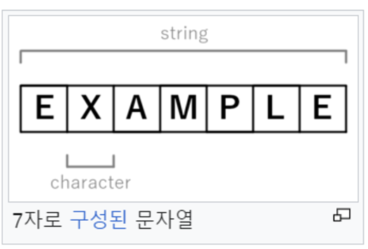

7개의 용어 정리
1. 숫자(Number)
- Number은 37이나 -9.25와 같은 숫자를 표현하고 싶을 때 사용하는 원시입니다.
- Number(value) 함수로 사용하면 문자열이나 다른값을 Number 유형으로 변환합니다.
<코드 예시>
Number("123"); // 숫자 123을 반환
Number("123") === 123; // 참
Number("unicorn"); // NaN
Number(undefined); // NaN
2. 문자(Character)
문자의 예로는 문자, 숫자, 일반적인 구두점(ex, “.”또는 “-”) 및 공백이 있습니다. 문자소, 문자소 유사 단위 또는 자연어의 문자 형태로 된 알파벳이나 음절과 같은 기호에 대략적으로 해당하는 정보 단위입니다.

3. 문자열(String)
- 문자열은 기호의 순차 수열을 말한다. 스트링(string)이라고도 한다. 이러한 기호는 미리 정의된 집합이나 음소 문자에서 선택한다.
- 프로그래밍 언어에서 스트링은 “time”, “space”, “문자”, “123” 등과 같이 몇 개의 문자들로 구성된 문자열(string) 하나를 값으로 취할 수 있는 변수를 의미한다.
- 참고로, 자바에서는 스트링 값(문자값)에 “123”이 입련된 경우, 큰 따옴표 안에 있는 123을 숫자가 아닌 문자로 본다.
4. 불리언(boolean)
- 불리언은 존재하는 데이터 유형이다.
- 참 또는 거짓 딱 두가지 값 밖에 없다. ★
- 이것과 저것, 이쪽 아니면 저쪽 두가지 뿐!
5. 객체(Object)
- 객체(Object)는 클래스에서 정의한 것을 토대로 메모리(실제 저장공간)에 할당된 것으로 프로그램에서 사용되는 데이터 또는 실별자에 의해 참조되는 공간을 의미하며, 변수,자료 구조, 함수 또는 메소드가 될 수 있따. 프로그래밍 언어는 변수를 이용해 객체에 접근하므로 객체와 변수라는 용어는 종종 함께 사용된다. 그러나 메모리가 할당되기 전까지 객체는 존재하지 않는다.
6. 배열(array)
- 배열(array)는 번호(인덱스)와 번호에 대응하는 데이터들로 이루어진 자료 구조를 나타낸다. 일반적으로 배열에는 같은 종류의 데이터들이 순차적으로 저장되어, 값의 번호가 곧 배열의 시작점으로부터 값이 저장되어 있는 상대적인 위치가 된다.
- 대부분의 프로그래밍 언어에서 사용할 수 있는 가장 기초적인 자로 구조로, 기본적인 용도 외에 다른 복잡한 자료 구조들을 표현하기 위해서 또는 행렬, 벡터 등을 컴퓨터에서 표현하는 용도 등으로도 사용된다.
7. 함수(function)
- 함수(function)은 소프트웨어에서 특정 동작을 수행하는 일정 코드부분이다. 즉, ‘특정한 작업을 위해 재활용할 수 있도록 구현한 코드 블록’을 의미한다.
구조
- 어떤 루틴에서 함수를 호출한다. 이때 함수가 가지는 특정 변수에 값을 전달하기도 하며, 이 특정 변수를 매개변수(parameter)라고 하며 전달되는 값을 인자(argument)라고 부른다.
- 함수가 호출되어 계산을 수행한다.
- 함수가 종료되고 실행 흐름이 원래의 루틴으로 돌아온다. 경우에 따라서는 함수가 계산하여 반환된 값(반환값)을 원래의 루틴에서 사용하기도 한다.
장점
- 하나의 큰 프로그램을 여러 부분으로 분리함으로써 구조적 프로그래밍이 가능하다.
- 같은 코드를 계속 쓰지 않음으로써 프로그램의 용량을 줄일 수 있고, 다른 부분이나 다른 프로그램에서 같은 코드를 사용할 수 있다.
- 함수의 기능과 내부 구현을 분리하는 캡슐화가 이루어진다.